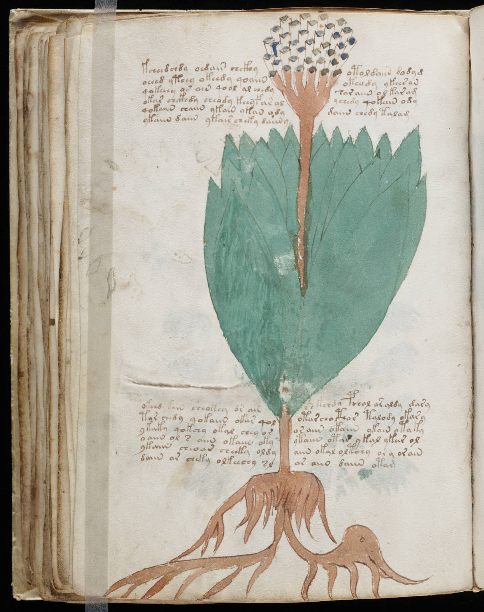

f55v
1kcheedchdy oedaiin chckhyotol daiin dodyd2oeeed yteey okeedy qoaiinokeody ykeesan3qokeeey os aiin qool al chedyear aiin ol kar am4okar chckhdy cheady keeyfar alychedy qokaiin ody5qokaiin chaiin ykain ykan odydaiin chedy talam6ykaiin daiin ykair cheky daiin y7okchd daiin sheokey or aircs kchdy pchal ar aldy dary8tor ch*dy qokaiin okar qolotarcho cthar talody okary9ykaky qokchy okal chey oror aiin okaiin ykain otaky10oaiin ol s aiin okaiin okyytaiin otar ykal ykar ol11ykaiin cheoar cheeky oldyaiin okal oltchy or y orain12daiin or cheky olkeechy slar aiin daiin otam
